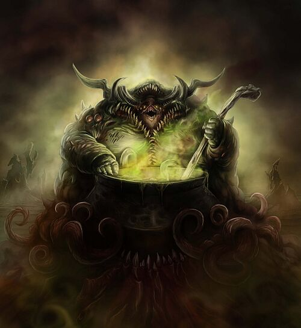

Nurgle
Nurgle
Titles
Plague Lord,
Plague God,
Plaguefather,
Lord of Pestilence,
Fly Lord,
Great Corruptor,
Grandfather Nurgle,
Father Nurgle
Master of Plague and Pestilence
Sacred Number
7
Nurgle is the Chaos God of disease, decay, despair, destruction, death and rebirth. In particular, the emotion of despair in mortals empowers the Plague God more than any other.
Nurgle was the third of the Chaos Gods to fully awaken within the Warp, emerging during the 2nd Millennium in the midst of Old Earth's European Middle Ages, as great plagues swept across the world heralding the god's birth.
Nurgle is the Chaos God most directly involved with the plight of mortals, particularly Humans who suffer so acutely from a fear of death, perhaps the oldest fear of that species, or any other. While Nurgle is the god of death and decay, it is also the god of rebirth. Decay is simply one part of the cycle of life, without which no new life could grow. In the same way, Nurgle is also the god of perseverance and survival. While those who wish to spread decay and corruption are certainly amongst its followers, there are also those who wish to endure, to become resilient enough to handle the difficulties and opportunities presented by an uncaring universe. Many of those affected by Nurgle's poxes usually turn to the god in order to escape the pain and sheer despair caused by sickness and disease.
Nurgle is the Great Lord of Decay and the Master of Plague and Pestilence. All things, no matter how solid and permanent they seem, are liable to eventual corruption and death. Even the process of creation is but the precursor to destruction and decay. The bastion of today is tomorrow's ruin, the maiden of the morning is the crone of the night, and the hope of a moment is but the foundation of regret.
Though Nurgle is the ultimate creator of every infection and epidemic to have ever swept the universe, Nurgle is not a morose purveyor of despair and gloom, but in fact a vibrant god of life and laughter. In death, there is life. Upon the decay of the living untold numbers of bacteria, viruses, insects and other carrion-feeders thrive. All life feeds upon other life to exist, and from every plague grows new generations, stronger and more virile than those who came before. Regeneration comes from decay, just as hope springs from despair. The greatest inspiration comes in the darkest moments; in times of crisis mortals are truly tested and driven to excel.
To understand what might otherwise seem contradictory or even perverse in nature, one must first comprehend that which Nurgle embodies. On the one hand, he is the Lord of Decay, whose body is wracked with disease; on the other, the god is full of unexpected energy and a desire to organise and enlighten.
The citizens of the Imperium know full well that their lives will end one day and that many of their number will live with disease or other torments in the meantime, yet they drive this knowledge deep into the corners of their minds and bury it with dreams and ceaseless activity. Nurgle is the embodiment of that knowledge of mortality and the unconscious response of all sentient beings to the knowledge of their own ending. It is the hidden fear of disease and decay, the gnawing truth of mortality and the power of defiance that it generates.
Every single Human being in the galaxy has been touched by Nurgle's foetid hand at some point. Countless trillions are host to its malignant, invisible creations, which corrupt their physical forms and sow despair in their minds. Interplanetary traffic ensures that contagious diseases are carried from world to world by the ignorant, the wilful and the strong.
As Nurgle's gifts multiply in full-blown pandemics, his power reaches a peak. Whole star systems -- even whole sectors -- are quarantined as plague runs rife across the stars. Proud civilisations wither away even as Grandfather Nurgle conjures obscene new life from their remains. Wherever there are plague pits and mass graves, the rotting splendour of Nurgle shines through.
Despite his consistent "generosity," only an enlightened few truly embrace Nurgle's greatness among Humans and aliens. Yet the god's worshippers exist in numbers enough to ensure his Daemon servants access to the material dimension wherever plague abounds. This is just as well, for of all the Chaos Gods, it is Nurgle who most appreciates the personal touch.
Nurgle's sacred number is seven, his colours are those of rot and ruin, waste and vomit, mucus and pus. The Plague God is represented by the colours of green and brown, generally the most putrid variations of each. Nurgle also embodies the will of Mankind and other intelligent species to struggle on no matter what opposes it, albeit perversely. Suffering, death, pain: Human beings push these things from their minds and try to forget them by living in the moment in the hope that the future will be a better one.
For this reason, Nurgle, his Daemonic Plague Legions and mortal followers usually demonstrate a disturbing joy at the pestilence that their god inflicts, seeing the plagues as gifts and the cries of their victims as gratitude for the strength to overcome the obstacles of a mortal life rather than agony. The Plague Lord is often referred to as "Grandfather Nurgle," "Father Nurgle" or "Papa Nurgle" by his followers because of this hideous paternal stance.
It has recently been uncovered by the Aeldari Harlequins that Nurgle is in possession of the Aeldari goddess Isha (whom he rescued from Slaanesh's clutches), and imprisoned her within his realm in the Warp. Nurgle utilises her for his experiments, creating new contagions and diseases to spread into the material universe.
With her divine powers of healing, Isha quickly regenerates from these tests, although Nurgle gleans what information is desired from the temporary effects. It is said that, secretly, she whispers the cures to those diseases to the mortals of the universe.